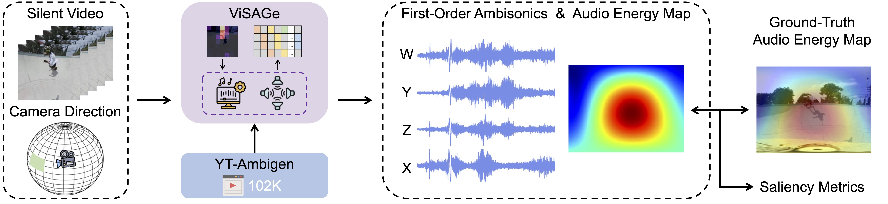
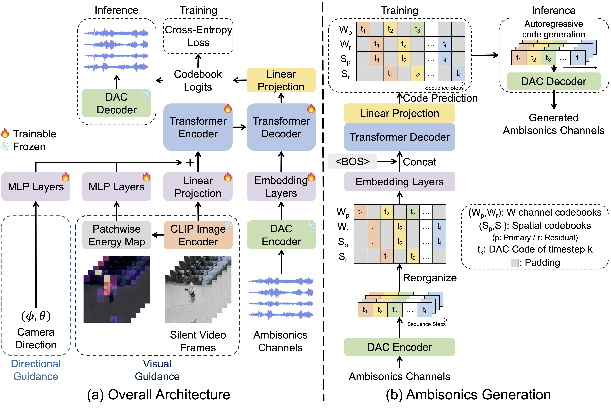
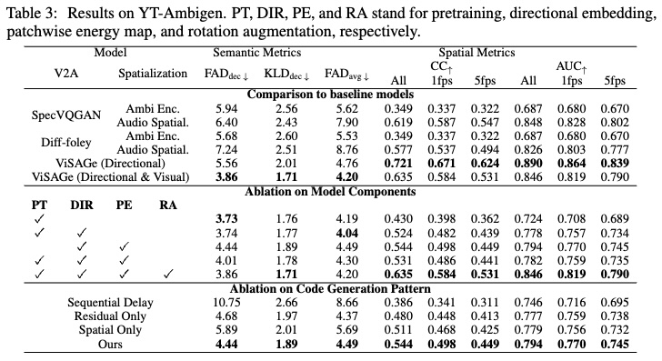
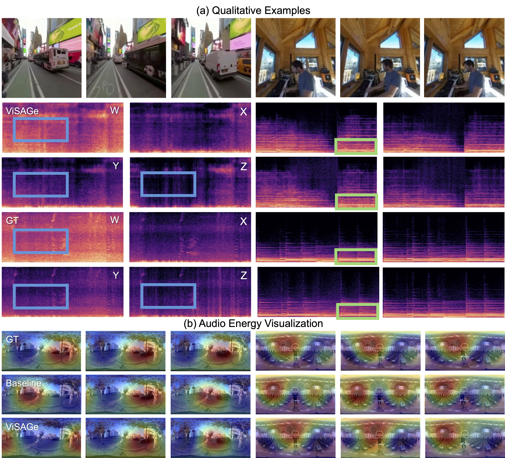

Overview

Given a silent video and the camera direction, the model generates corresponding first-order ambisonics. The camera direction gives cue about where the visual event occurs, enabling the model to generate an appropriate three-dimensional sound field.

We propose YT-Ambigen, a new dataset comprising YouTube videos paired with first-order ambisonics, tailored for the audio generaiton.

We present Video-to-Spatial Audio Generation (ViSAGe), an end-to-end framework designed to generate and spatialize audio based on visual content and camera direction. ViSAGe leverages CLIP features, patchwise energy maps, and neural audio codecs along with rotation augmentation.

ViSAGe outperforms two-stage approaches, which separately handle video-to-audio generation and audio spatialization, across all metrics.
